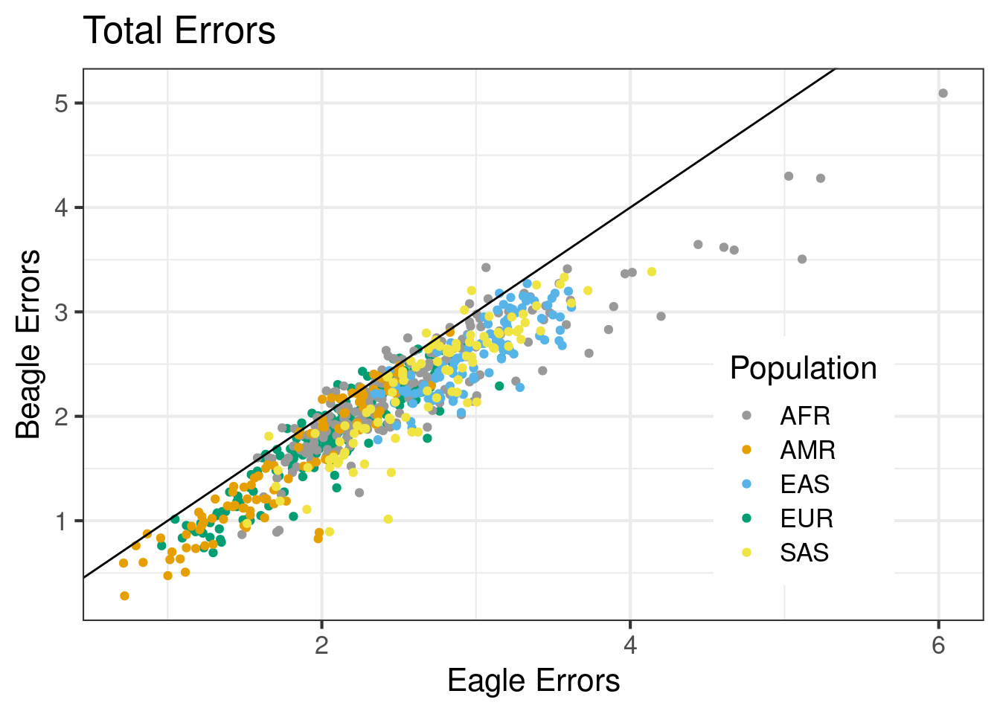
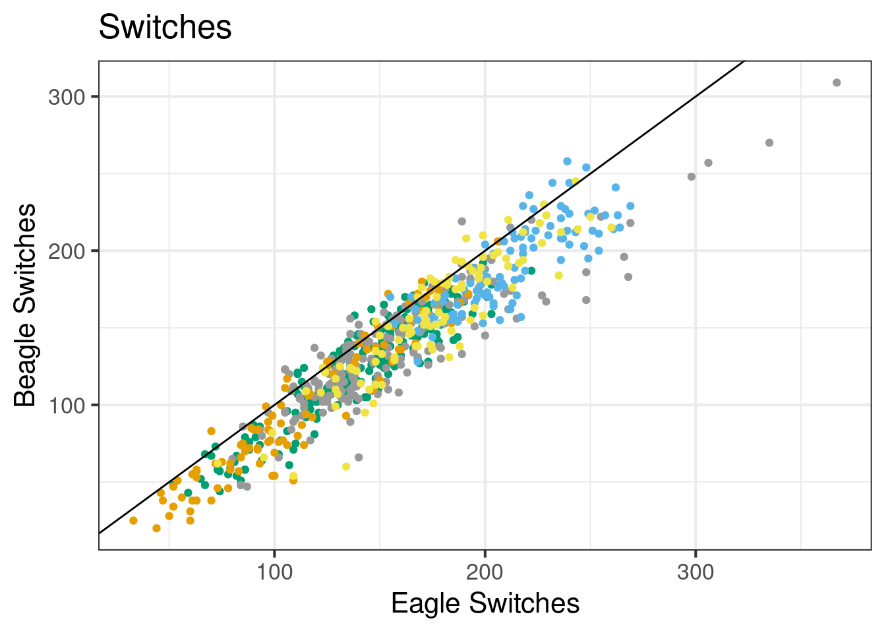
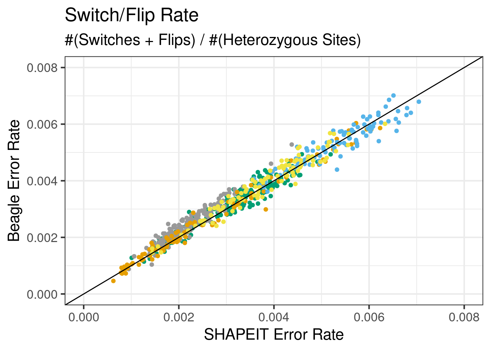

10aug22_diploid_results
Andy Beck
2022-08-10
Last updated: 2023-06-06
Checks: 6 1
Knit directory: phasing/
This reproducible R Markdown analysis was created with workflowr (version 1.7.0). The Checks tab describes the reproducibility checks that were applied when the results were created. The Past versions tab lists the development history.
Great! Since the R Markdown file has been committed to the Git repository, you know the exact version of the code that produced these results.
Great job! The global environment was empty. Objects defined in the global environment can affect the analysis in your R Markdown file in unknown ways. For reproduciblity it’s best to always run the code in an empty environment.
The command set.seed(20220221) was run prior to running
the code in the R Markdown file. Setting a seed ensures that any results
that rely on randomness, e.g. subsampling or permutations, are
reproducible.
Great job! Recording the operating system, R version, and package versions is critical for reproducibility.
Nice! There were no cached chunks for this analysis, so you can be confident that you successfully produced the results during this run.
Using absolute paths to the files within your workflowr project makes it difficult for you and others to run your code on a different machine. Change the absolute path(s) below to the suggested relative path(s) to make your code more reproducible.
| absolute | relative |
|---|---|
| /net/snowwhite/home/beckandy/research/phasing/output/figures/paper_svg/ | output/figures/paper_svg |
| /net/snowwhite/home/beckandy/research/phasing/output/final_switch_errors/switch_errors/eagle/annotated/ | output/final_switch_errors/switch_errors/eagle/annotated |
| /net/snowwhite/home/beckandy/research/phasing/output/final_switch_errors/switch_errors/shapeit/annotated/ | output/final_switch_errors/switch_errors/shapeit/annotated |
| /net/snowwhite/home/beckandy/research/phasing/output/final_switch_errors/switch_errors/beagle/annotated/ | output/final_switch_errors/switch_errors/beagle/annotated |
| /net/snowwhite/home/beckandy/research/phasing/output/final_switch_errors/vcf_n_sites/ | output/final_switch_errors/vcf_n_sites |
| /net/snowwhite/home/beckandy/research/phasing/output/final_switch_errors/whatshap/ | output/final_switch_errors/whatshap |
| /net/snowwhite/home/beckandy/research/phasing/output/background_rates/dimer.csv | output/background_rates/dimer.csv |
| /net/snowwhite/home/beckandy/research/phasing/output/background_rates/3mer.csv | output/background_rates/3mer.csv |
| /net/snowwhite/home/beckandy/research/phasing/data/ref/chrX_hets_anno.csv | data/ref/chrX_hets_anno.csv |
| /net/snowwhite/home/beckandy/research/phasing/output/chrX_maf.tsv | output/chrX_maf.tsv |
| /net/snowwhite/home/beckandy/research/phasing/output/chrX_maf_simple.tsv | output/chrX_maf_simple.tsv |
Great! You are using Git for version control. Tracking code development and connecting the code version to the results is critical for reproducibility.
The results in this page were generated with repository version 0c54f9a. See the Past versions tab to see a history of the changes made to the R Markdown and HTML files.
Note that you need to be careful to ensure that all relevant files for
the analysis have been committed to Git prior to generating the results
(you can use wflow_publish or
wflow_git_commit). workflowr only checks the R Markdown
file, but you know if there are other scripts or data files that it
depends on. Below is the status of the Git repository when the results
were generated:
Ignored files:
Ignored: .Rhistory
Ignored: .Rproj.user/
Ignored: analysis/figure/
Ignored: data/1kgp/
Ignored: data/consensus/
Ignored: data/gnomAD/
Ignored: data/mask/
Ignored: data/ovary/
Ignored: data/ref/
Ignored: data/shapeit/
Ignored: output/2023_switch_errors/
Ignored: output/X_hets/
Ignored: output/admix_switch_errors/
Ignored: output/afr_eur_ref/
Ignored: output/background_rates/
Ignored: output/figures/
Ignored: output/filter_switch_errors/
Ignored: output/final_switch_errors/
Ignored: output/gnomad/
Ignored: output/male_only_reference/
Ignored: output/nygc/
Ignored: output/singleton_switch_errors/
Ignored: plink.log
Ignored: sandbox/
Untracked files:
Untracked: analysis/20230221_gnomAD.Rmd
Untracked: analysis/NYGC_phasing_results_exploration.Rmd
Untracked: code/batch_diploid_v3.sh
Untracked: code/batch_diploid_v3_afr.sh
Untracked: code/batch_diploid_v3_male.sh
Untracked: code/batch_diploid_v3_singletons.sh
Untracked: code/batch_diploid_v3_topmed.sh
Untracked: code/core
Untracked: code/old/
Unstaged changes:
Modified: README.md
Modified: Rplots.pdf
Modified: analysis/07032023_gnomad_nygc_comp.Rmd
Modified: analysis/15022023_nygc_vs_internal.Rmd
Modified: analysis/captains_log.Rmd
Modified: code/batch_annotate_het.sh
Modified: code/batch_annotate_switch.sh
Deleted: code/batch_diploid_admix.sh
Deleted: code/batch_diploid_analysis.sh
Deleted: code/batch_diploid_v2.sh
Deleted: code/batch_diploid_v2_1kgp.sh
Deleted: code/batch_diploid_v2_filter.sh
Deleted: code/batch_parameter_test.sh
Modified: code/batch_vote_phase.sh
Modified: code/common_functions.R
Modified: code/sample_X_pairs.R
Modified: code/topmed_comparison_prep.sh
Modified: code/vote_phase.R
Modified: code/vote_phase_easy.R
Note that any generated files, e.g. HTML, png, CSS, etc., are not included in this status report because it is ok for generated content to have uncommitted changes.
These are the previous versions of the repository in which changes were
made to the R Markdown (analysis/phasing_results.Rmd) and
HTML (docs/phasing_results.html) files. If you’ve
configured a remote Git repository (see ?wflow_git_remote),
click on the hyperlinks in the table below to view the files as they
were in that past version.
| File | Version | Author | Date | Message |
|---|---|---|---|---|
| Rmd | 0c54f9a | Andy Beck | 2023-06-06 | wflow_publish("analysis/phasing_results.Rmd") |
| Rmd | e239a47 | Andy Beck | 2023-02-15 | initial commit |
| html | e239a47 | Andy Beck | 2023-02-15 | initial commit |
| Rmd | d49a8b8 | Andy Beck | 2022-06-08 | wflow_rename("analysis/masked_diploid_results.Rmd", "analysis/phasing_results.Rmd") |
| html | d49a8b8 | Andy Beck | 2022-06-08 | wflow_rename("analysis/masked_diploid_results.Rmd", "analysis/phasing_results.Rmd") |
Libraries and global variables
library(tidyverse)── Attaching core tidyverse packages ──────────────────────── tidyverse 2.0.0 ──
✔ dplyr 1.1.2 ✔ readr 2.1.4
✔ forcats 1.0.0 ✔ stringr 1.5.0
✔ ggplot2 3.4.2 ✔ tibble 3.2.1
✔ lubridate 1.9.2 ✔ tidyr 1.3.0
✔ purrr 1.0.1
── Conflicts ────────────────────────────────────────── tidyverse_conflicts() ──
✖ dplyr::filter() masks stats::filter()
✖ dplyr::lag() masks stats::lag()
ℹ Use the conflicted package (<http://conflicted.r-lib.org/>) to force all conflicts to become errorslibrary(janitor)
Attaching package: 'janitor'
The following objects are masked from 'package:stats':
chisq.test, fisher.testsource("code/common_functions.R")
library(ggsci)
theme_set(theme_bw(base_size = 18))
pal1 <- pal_ucscgb()
svg_out_dir <- "/net/snowwhite/home/beckandy/research/phasing/output/figures/paper_svg/"
eagle_switch_dir <- "/net/snowwhite/home/beckandy/research/phasing/output/final_switch_errors/switch_errors/eagle/annotated/"
shapeit_switch_dir <- "/net/snowwhite/home/beckandy/research/phasing/output/final_switch_errors/switch_errors/shapeit/annotated/"
beagle_switch_dir <- "/net/snowwhite/home/beckandy/research/phasing/output/final_switch_errors/switch_errors/beagle/annotated/"
num_sites_dir <- "/net/snowwhite/home/beckandy/research/phasing/output/final_switch_errors/vcf_n_sites/"
whatshap_dir <- "/net/snowwhite/home/beckandy/research/phasing/output/final_switch_errors/whatshap/"
whatshap_dir2 <- "/net/snowwhite/home/beckandy/research/phasing/output/final_switch_errors/whatshap/"
pair_info_df <- read_delim("data/sample_pairs_18apr2023.csv", col_names = c("POP", "ID1", "ID2"))Rows: 400 Columns: 3
── Column specification ────────────────────────────────────────────────────────
Delimiter: ","
chr (3): POP, ID1, ID2
ℹ Use `spec()` to retrieve the full column specification for this data.
ℹ Specify the column types or set `show_col_types = FALSE` to quiet this message.pair_info_df$SP <- c(rep("EUR", 200), rep("AFR", 200))
gc_content_1kb <- read_tsv("data/gc1kb_X_only.bed")Rows: 156041 Columns: 12
── Column specification ────────────────────────────────────────────────────────
Delimiter: "\t"
chr (1): #1_usercol
dbl (11): 2_usercol, 3_usercol, 4_pct_at, 5_pct_gc, 6_num_A, 7_num_C, 8_num_...
ℹ Use `spec()` to retrieve the full column specification for this data.
ℹ Specify the column types or set `show_col_types = FALSE` to quiet this message.colnames(gc_content_1kb) <- c("CHR", "START", "END", "AT", "GC", "A", "C", "G", "T", "TOTAL", "OTHER", "LENGTH")
gc_content_1kb <- gc_content_1kb %>%
mutate(bin_id = (START / 1000) + 1)
background_dimer <- read_csv("/net/snowwhite/home/beckandy/research/phasing/output/background_rates/dimer.csv")Rows: 16 Columns: 2
── Column specification ────────────────────────────────────────────────────────
Delimiter: ","
chr (1): Nucs
dbl (1): N
ℹ Use `spec()` to retrieve the full column specification for this data.
ℹ Specify the column types or set `show_col_types = FALSE` to quiet this message.background_3mer <- read_csv("/net/snowwhite/home/beckandy/research/phasing/output/background_rates/3mer.csv")Rows: 64 Columns: 2
── Column specification ────────────────────────────────────────────────────────
Delimiter: ","
chr (1): Nucs
dbl (1): N
ℹ Use `spec()` to retrieve the full column specification for this data.
ℹ Specify the column types or set `show_col_types = FALSE` to quiet this message.cbPalette <- c("#999999", "#E69F00", "#56B4E9", "#009E73", "#F0E442", "#0072B2", "#D55E00", "#CC79A7")
background_cpg_het <- 229868 / 1567042Single Pseudo-diploid Example
pair_id <- 123
bin_size = 1000
switch_err_eagle <- read_csv(paste0(eagle_switch_dir, "switch_", pair_id, ".csv")) %>%
mutate(bin_id = ceiling(pos_start / bin_size))Rows: 311 Columns: 6
── Column specification ────────────────────────────────────────────────────────
Delimiter: ","
chr (2): motif_start, end_motif
dbl (4): pos_start, pos_end, cpg_start, cpg_end
ℹ Use `spec()` to retrieve the full column specification for this data.
ℹ Specify the column types or set `show_col_types = FALSE` to quiet this message.switch_err_shapeit <- read_csv(paste0(shapeit_switch_dir, "switch_", pair_id, ".csv")) %>%
mutate(bin_id = ceiling(pos_start / bin_size))Rows: 307 Columns: 6
── Column specification ────────────────────────────────────────────────────────
Delimiter: ","
chr (2): motif_start, end_motif
dbl (4): pos_start, pos_end, cpg_start, cpg_end
ℹ Use `spec()` to retrieve the full column specification for this data.
ℹ Specify the column types or set `show_col_types = FALSE` to quiet this message.switch_err_beagle <- read_csv(paste0(beagle_switch_dir, "switch_", pair_id, ".csv")) %>%
mutate(bin_id = ceiling(pos_start / bin_size))Rows: 256 Columns: 6
── Column specification ────────────────────────────────────────────────────────
Delimiter: ","
chr (2): motif_start, end_motif
dbl (4): pos_start, pos_end, cpg_start, cpg_end
ℹ Use `spec()` to retrieve the full column specification for this data.
ℹ Specify the column types or set `show_col_types = FALSE` to quiet this message.whatshap_eagle <- read_tsv(paste0(whatshap_dir, "/eagle/eval_", pair_id, ".tsv")) %>%
clean_names() %>%
select(all_assessed_pairs, all_switches, all_switch_rate, all_switchflips, all_switchflip_rate) %>%
mutate(switches = as.numeric(str_split(all_switchflips, "/")[[1]][1]),
flips = as.numeric(str_split(all_switchflips, "/")[[1]][2])) %>%
rename(n_het = all_assessed_pairs, total_errors = all_switches, error_rate = all_switch_rate) %>%
select(-all_switchflips)Rows: 1 Columns: 28
── Column specification ────────────────────────────────────────────────────────
Delimiter: "\t"
chr (8): #sample, chromosome, dataset_name0, dataset_name1, file_name0, fil...
dbl (20): intersection_blocks, covered_variants, all_assessed_pairs, all_swi...
ℹ Use `spec()` to retrieve the full column specification for this data.
ℹ Specify the column types or set `show_col_types = FALSE` to quiet this message.whatshap_shapeit <- read_tsv(paste0(whatshap_dir2, "/shapeit/eval_", pair_id, ".tsv")) %>%
clean_names() %>%
select(all_assessed_pairs, all_switches, all_switch_rate, all_switchflips, all_switchflip_rate) %>%
mutate(switches = as.numeric(str_split(all_switchflips, "/")[[1]][1]),
flips = as.numeric(str_split(all_switchflips, "/")[[1]][2])) %>%
rename(n_het = all_assessed_pairs, total_errors = all_switches, error_rate = all_switch_rate) %>%
select(-all_switchflips)Rows: 1 Columns: 28
── Column specification ────────────────────────────────────────────────────────
Delimiter: "\t"
chr (8): #sample, chromosome, dataset_name0, dataset_name1, file_name0, fil...
dbl (20): intersection_blocks, covered_variants, all_assessed_pairs, all_swi...
ℹ Use `spec()` to retrieve the full column specification for this data.
ℹ Specify the column types or set `show_col_types = FALSE` to quiet this message.whatshap_beagle <- read_tsv(paste0(whatshap_dir, "/beagle/eval_", pair_id, ".tsv")) %>%
clean_names() %>%
select(all_assessed_pairs, all_switches, all_switch_rate, all_switchflips, all_switchflip_rate) %>%
mutate(switches = as.numeric(str_split(all_switchflips, "/")[[1]][1]),
flips = as.numeric(str_split(all_switchflips, "/")[[1]][2])) %>%
rename(n_het = all_assessed_pairs, total_errors = all_switches, error_rate = all_switch_rate) %>%
select(-all_switchflips)Rows: 1 Columns: 28
── Column specification ────────────────────────────────────────────────────────
Delimiter: "\t"
chr (8): #sample, chromosome, dataset_name0, dataset_name1, file_name0, fil...
dbl (20): intersection_blocks, covered_variants, all_assessed_pairs, all_swi...
ℹ Use `spec()` to retrieve the full column specification for this data.
ℹ Specify the column types or set `show_col_types = FALSE` to quiet this message.flip_pos_beagle <- get_flip_pos(switch_err_beagle)
flip_pos_eagle <- get_flip_pos(switch_err_eagle)
flip_pos_shapeit <- get_flip_pos(switch_err_shapeit)
switch_err_beagle$is_flip <- (switch_err_beagle$pos_start %in% flip_pos_beagle) | (switch_err_beagle$pos_end %in% flip_pos_beagle)
switch_err_eagle$is_flip <- (switch_err_eagle$pos_start %in% flip_pos_eagle) | (switch_err_eagle$pos_end %in% flip_pos_eagle)
switch_err_shapeit$is_flip <- (switch_err_shapeit$pos_start %in% flip_pos_shapeit) | (switch_err_shapeit$pos_end %in% flip_pos_shapeit)
switch_err_beagle$start_flip <- switch_err_beagle$pos_end %in% flip_pos_beagle
switch_err_eagle$start_flip <- switch_err_eagle$pos_end %in% flip_pos_eagle
switch_err_shapeit$start_flip <- switch_err_shapeit$pos_end %in% flip_pos_shapeit
switch_err_eagle <- switch_err_eagle %>%
left_join({gc_content_1kb %>% select(bin_id, GC)}, by = "bin_id")
switch_err_beagle <- switch_err_beagle %>%
left_join({gc_content_1kb %>% select(bin_id, GC)}, by = "bin_id")
switch_err_shapeit <- switch_err_shapeit %>%
left_join({gc_content_1kb %>% select(bin_id, GC)}, by = "bin_id")
# Compute distance between distinct errors
switch_err_beagle %>%
filter(is_flip == F | start_flip == T) %>% # filter out latter halves of flips
pull(pos_start) %>%
diff(lag = 1) [1] 85430 110601 224258 67188 7700 546002 1479433 517890 313371
[10] 48969 25346 543008 517052 240051 113321 15571 205628 78788
[19] 1330277 7112 41389 9263 88535 156415 205171 37824 358965
[28] 217239 2041536 108475 104638 50349 21555 301162 444257 43412
[37] 762047 2609728 1023187 534179 1959749 69773 147737 248783 1157584
[46] 159263 105111 515843 93044 105500 8385 381725 263172 129202
[55] 1723357 1185873 296415 650010 1054899 1210675 214788 282002 2113894
[64] 15572 52318 42370 161411 501180 59733 294328 1873532 347761
[73] 1876925 116334 1890676 573301 960314 1846527 37982 974992 203596
[82] 303587 1306037 8710 314816 54906 11384 730127 463651 234308
[91] 490877 604332 357538 2006569 1773780 285190 257255 1387516 395241
[100] 1423222 33955 1524027 51087 182719 4115360 37363 5754824 311427
[109] 240160 181604 25505 1225972 320017 673732 39736 4968628 3737412
[118] 860679 1866378 29478 4351687 1571071 1359645 510335 592318 1332610
[127] 7839185 227853 211261 36335 141114 960995 1975484 2199087 87295
[136] 5900 1151214 1502394 386412 1329686 325591 1084668 305500 385824
[145] 762580 1401120 1053562 290379 1188791 335293 990197 1089559 480330
[154] 2441877 404232 146096 374410 617933 52756 840357 2534965 1752571
[163] 30827 3531065 1163956 316576 3671675 1727763 902077 38537 29983
[172] 11472 1080831 583529 136729 262689 94597 122757 259413 669602
[181] 1504668 558061 4456 839982 2555507 1467417 203952 248622 405983
[190] 1427605 254711 185421# Overlap of errors
intersect({switch_err_beagle %>% filter(start_flip) %>% pull(pos_start)},
{switch_err_eagle %>% filter(start_flip) %>% pull(pos_start)}) %>%
length()[1] 41intersect({switch_err_shapeit %>% filter(start_flip) %>% pull(pos_start)},
{switch_err_eagle %>% filter(start_flip) %>% pull(pos_start)}) %>%
length()[1] 49intersect({switch_err_shapeit %>% filter(start_flip) %>% pull(pos_start)},
{switch_err_beagle %>% filter(start_flip) %>% pull(pos_start)}) %>%
length()[1] 41intersect(intersect({switch_err_beagle %>% filter(start_flip) %>% pull(pos_start)},
{switch_err_eagle %>% filter(start_flip) %>% pull(pos_start)}),
{switch_err_shapeit %>% filter(start_flip) %>% pull(pos_start)}) %>%
length()[1] 30# Number of flips starting at CpG
switch_err_beagle %>%
filter(start_flip == TRUE) %>%
pull(cpg_start) %>%
sum()[1] 8switch_err_eagle %>%
filter(start_flip == TRUE) %>%
pull(cpg_start) %>%
sum()[1] 13switch_err_shapeit %>%
filter(start_flip == TRUE) %>%
pull(cpg_start) %>%
sum()[1] 12# Number of non-flips starting at CpG
switch_err_beagle %>%
filter(is_flip == FALSE) %>%
pull(cpg_start) %>%
sum()[1] 28switch_err_eagle %>%
filter(is_flip == FALSE) %>%
pull(cpg_start) %>%
sum()[1] 29switch_err_shapeit %>%
filter(is_flip == FALSE) %>%
pull(cpg_start) %>%
sum()[1] 19Summary statistics on all pseudo-diploids
From vcftools:
df_vcftools <- lapply(c(1:400),
function(x){
switch_summary(x, eagle_switch_dir, beagle_switch_dir, shapeit_switch_dir, gc_content_1kb)
}) %>%
bind_rows()
df_vcftools$pop <- c(rep("EUR", 200), rep("AFR", 200))From whatshap:
df_wh_eagle <- get_all_whatshap("eagle")
df_wh_beagle <- get_all_whatshap("beagle")
df_wh_si <- get_all_whatshap("shapeit")Raw counts:
df_wh_si %>%
select(id, pop, switches) %>%
rename(shapeit = switches) %>%
inner_join({df_wh_eagle %>% select(id, pop, switches) %>% rename(eagle = switches)}, by = c("id", "pop")) %>%
ggplot(aes(x = shapeit, y = eagle, colour = pop)) +
geom_point() +
geom_abline(slope = 1, intercept = 0) +
ggtitle("Switches") +
xlab("SHAPEIT5 Switches") +
ylab("EAGLE2 Switches") +
guides(colour=guide_legend(title="Population")) +
scale_color_jco() +
theme_bw(base_size = 16) +
theme(legend.position = c(0.2, .85))
df_wh_si %>%
select(id, pop, switches) %>%
rename(shapeit = switches) %>%
inner_join({df_wh_beagle %>% select(id, pop, switches) %>% rename(beagle = switches)}, by = c("id", "pop")) %>%
ggplot(aes(x = shapeit, y = beagle, colour = pop)) +
geom_point() +
geom_abline(slope = 1, intercept = 0) +
ggtitle("Switches") +
xlab("SHAPEIT5 Switches") +
ylab("BEAGLE5 Switches") +
guides(colour=guide_legend(title="Population")) +
scale_color_jco() +
theme_bw(base_size = 16) +
theme(legend.position = c(0.8, .2))
df_wh_eagle %>%
select(id, pop, switches) %>%
rename(eagle = switches) %>%
inner_join({df_wh_beagle %>% select(id, pop, switches) %>% rename(beagle = switches)}, by = c("id", "pop")) %>%
ggplot(aes(x = eagle, y = beagle, colour = pop)) +
geom_point() +
geom_abline(slope = 1, intercept = 0) +
ggtitle("Switches") +
xlab("EAGLE2 Switches") +
ylab("BEAGLE5 Switches") +
guides(colour=guide_legend(title="Population")) +
scale_color_jco() +
theme_bw(base_size = 16) +
theme(legend.position = c(0.8, .2))
Plot error rates against pairs of methods:
out_file <- paste0(svg_out_dir, "error_rate_si_e.svg")
df_wh_si %>%
select(id, pop, all_switchflip_rate) %>%
rename(shapeit = all_switchflip_rate) %>%
inner_join({df_wh_eagle %>% select(id, pop, all_switchflip_rate) %>% rename(eagle = all_switchflip_rate)}, by = c("id", "pop")) %>%
ggplot(aes(x = shapeit, y = eagle, colour = pop)) +
geom_point() +
geom_abline(slope = 1, intercept = 0) +
ggtitle("Switch/Flip Rate", "#(Switches + Flips) / #(Heterozygous Sites)") +
xlab("SHAPEIT5 Error Rate") +
ylab("EAGLE2 Error Rate") +
guides(colour=guide_legend(title="Population")) +
scale_color_jco() +
theme_bw(base_size = 16) +
xlim(c(0,0.006)) + ylim(c(0,0.006)) +
theme(legend.position = c(0.8, .2))
ggsave(filename = out_file, width = 5.33, height = 4.26, dpi = 300, units = "in")df_wh_si %>%
select(id, pop, all_switchflip_rate) %>%
rename(shapeit = all_switchflip_rate) %>%
inner_join({df_wh_beagle %>% select(id, pop, all_switchflip_rate) %>% rename(beagle = all_switchflip_rate)}, by = c("id", "pop")) %>%
ggplot(aes(x = shapeit, y = beagle, colour = pop)) +
geom_point() +
geom_abline(slope = 1, intercept = 0) +
ggtitle("Switch/Flip Rate", "#(Switches + Flips) / #(Heterozygous Sites)") +
xlab("SHAPEIT5 Error Rate") +
ylab("BEAGLE5 Error Rate") +
guides(colour=guide_legend(title="Population")) +
scale_color_jco() +
theme_bw(base_size = 16) +
xlim(c(0,0.006)) + ylim(c(0,0.006)) +
theme(legend.position = c(0.8, .2))
out_file <- paste0(svg_out_dir, "error_rate_si_b.svg")
ggsave(filename = out_file, width = 5.33, height = 4.26, dpi = 300, units = "in")df_wh_eagle %>%
select(id, pop, all_switchflip_rate) %>%
rename(eagle = all_switchflip_rate) %>%
inner_join({df_wh_beagle %>% select(id, pop, all_switchflip_rate) %>% rename(beagle = all_switchflip_rate)}, by = c("id", "pop")) %>%
ggplot(aes(x = eagle, y = beagle, colour = pop)) +
geom_point() +
geom_abline(slope = 1, intercept = 0) +
ggtitle("Switch/Flip Rate", "#(Switches + Flips) / #(Heterozygous Sites)") +
xlab("EAGLE2 Error Rate") +
ylab("BEAGLE5 Error Rate") +
guides(colour=guide_legend(title="Population")) +
scale_color_jco() +
theme_bw(base_size = 16) +
xlim(c(0,0.006)) + ylim(c(0,0.006)) +
theme(legend.position = c(0.8, .2))
out_file <- paste0(svg_out_dir, "error_rate_e_b.svg")
ggsave(filename = out_file, width = 5.33, height = 4.26, dpi = 300, units = "in")Flips by method
df_wh_si %>%
select(id, pop, flips, n_het) %>%
rename(shapeit = flips) %>%
inner_join({df_wh_eagle %>% select(id, pop, flips) %>% rename(eagle = flips)}, by = c("id", "pop")) %>%
ggplot(aes(x = shapeit, y = eagle, colour = pop)) +
geom_point() +
geom_abline(slope = 1, intercept = 0) +
ggtitle("Flips per pseudo-diplod") +
xlab("SHAPEIT5 flips") +
ylab("EAGLE2 flips") +
guides(colour=guide_legend(title="Population")) +
scale_color_jco() +
theme_bw(base_size = 16) +
theme(legend.position = c(0.8, .2))
df_wh_si %>%
select(id, pop, flips, n_het) %>%
rename(shapeit = flips) %>%
inner_join({df_wh_beagle %>% select(id, pop, flips) %>% rename(beagle = flips)}, by = c("id", "pop")) %>%
ggplot(aes(x = shapeit, y = beagle, colour = pop)) +
geom_point() +
geom_abline(slope = 1, intercept = 0) +
ggtitle("Flips per pseudo-diplod") +
xlab("SHAPEIT5 flips") +
ylab("BEAGLE5 flips") +
guides(colour=guide_legend(title="Population")) +
scale_color_jco() +
theme_bw(base_size = 16) +
theme(legend.position = c(0.8, .2))
df_wh_eagle %>%
select(id, pop, flips, n_het) %>%
rename(eagle = flips) %>%
inner_join({df_wh_beagle %>% select(id, pop, flips) %>% rename(beagle = flips)}, by = c("id", "pop")) %>%
ggplot(aes(x = eagle, y = beagle, colour = pop)) +
geom_point() +
geom_abline(slope = 1, intercept = 0) +
ggtitle("Flips per pseudo-diplod") +
xlab("EAGLE2 flips") +
ylab("BEAGLE5 flips") +
guides(colour=guide_legend(title="Population")) +
scale_color_jco() +
theme_bw(base_size = 16) +
theme(legend.position = c(0.8, .2))
| Version | Author | Date |
|---|---|---|
| e239a47 | Andy Beck | 2023-02-15 |
Flip Rate
df_wh_si %>%
select(id, pop, flips, n_het) %>%
mutate(flips = flips / (n_het)) %>%
rename(shapeit = flips) %>%
inner_join({df_wh_eagle %>%
select(id, pop, flips, n_het) %>%
mutate(flips = flips / (n_het)) %>%
rename(eagle = flips)}, by = c("id", "pop")) %>%
ggplot(aes(x = shapeit, y = eagle, colour = pop)) +
geom_point() +
geom_abline(slope = 1, intercept = 0) +
ggtitle("Flip Rate", "#(Flips) / #(Heterozygous Sites)") +
xlab("SHAPEIT5 Flip Rate") +
ylab("EAGLE2 flips") +
guides(colour=guide_legend(title="Population")) +
scale_color_jco() +
theme_bw(base_size = 16) +
xlim(c(0,0.003)) + ylim(c(0,0.003)) +
theme(legend.position = c(0.8, .2))
| Version | Author | Date |
|---|---|---|
| d49a8b8 | Andy Beck | 2022-06-08 |
out_file <- paste0(svg_out_dir, "flip_rate_s_e.svg")
ggsave(filename = out_file, width = 5.33, height = 4.26, dpi = 300, units = "in")
df_wh_si %>%
select(id, pop, flips, n_het) %>%
mutate(flips = flips / (n_het)) %>%
rename(shapeit = flips) %>%
inner_join({df_wh_beagle %>%
select(id, pop, flips, n_het) %>%
mutate(flips = flips / (n_het)) %>%
rename(beagle = flips)}, by = c("id", "pop")) %>%
ggplot(aes(x = shapeit, y = beagle, colour = pop)) +
geom_point() +
geom_abline(slope = 1, intercept = 0) +
ggtitle("Flip Rate", "# Flips / #(Heterozygous Sites)") +
xlab("SHAPEIT5 Flip Rate") +
ylab("BEAGLE5 Flip Rate") +
guides(colour=guide_legend(title="Population")) +
scale_color_jco() +
theme_bw(base_size = 16) +
xlim(c(0,0.003)) + ylim(c(0,0.003)) +
theme(legend.position = c(0.8, .2))
out_file <- paste0(svg_out_dir, "flip_rate_s_b.svg")
ggsave(filename = out_file, width = 5.33, height = 4.26, dpi = 300, units = "in")
df_wh_eagle %>%
select(id, pop, flips, n_het) %>%
mutate(flips = flips / (n_het)) %>%
rename(eagle = flips) %>%
inner_join({df_wh_beagle %>%
select(id, pop, flips, n_het) %>%
mutate(flips = flips / (n_het)) %>%
rename(beagle = flips)}, by = c("id", "pop")) %>%
ggplot(aes(x = eagle, y = beagle, colour = pop)) +
geom_point() +
geom_abline(slope = 1, intercept = 0) +
ggtitle("Flip Rate", "# Flips / #(Heterozygous Sites)") +
xlab("EAGLE2 flips") +
ylab("BEAGLE5 flips") +
guides(colour=guide_legend(title="Population")) +
scale_color_jco() +
theme_bw(base_size = 16) +
xlim(c(0,0.003)) + ylim(c(0,0.003)) +
theme(legend.position = c(0.8, .2))
out_file <- paste0(svg_out_dir, "flip_rate_b_e.svg")
ggsave(filename = out_file, width = 5.33, height = 4.26, dpi = 300, units = "in")Tables for ASHG 2022
library(corrr)
df_wh_beagle %>%
select(pop, id, n_het) %>%
rename(beagle = n_het) %>%
full_join({
df_wh_eagle %>%
select(pop, id, n_het) %>%
rename(eagle = n_het)
}) %>%
select(eagle, beagle) %>%
correlate()Joining with `by = join_by(pop, id)`
Correlation computed with • Method: 'pearson' • Missing treated using:
'pairwise.complete.obs'# A tibble: 2 × 3
term eagle beagle
<chr> <dbl> <dbl>
1 eagle NA 1
2 beagle 1 NAold <- options(pillar.sigfig = 7)
df_wh_beagle %>%
select(pop, n_het, total_errors, switches, flips) %>%
mutate(error_rate = total_errors / n_het,
flip_rate = flips / n_het,
non_flip_rate = switches / n_het) %>%
group_by(pop) %>%
summarize(across(n_het:non_flip_rate, ~ mean(.x, na.rm=T))) # A tibble: 2 × 8
pop n_het total_errors switches flips error_rate flip_rate
<chr> <dbl> <dbl> <dbl> <dbl> <dbl> <dbl>
1 AFR 100973.5 347.26 138.89 104.185 0.003442657 0.001032775
2 EUR 61074.78 261.51 118.97 71.27 0.004280338 0.001166611
# ℹ 1 more variable: non_flip_rate <dbl>df_wh_eagle %>%
select(pop, n_het, total_errors, switches, flips) %>%
mutate(error_rate = total_errors / n_het,
flip_rate = flips / n_het,
non_flip_rate = switches / n_het) %>%
group_by(pop) %>%
summarize(across(n_het:non_flip_rate, ~ mean(.x, na.rm=T))) # A tibble: 2 × 8
pop n_het total_errors switches flips error_rate flip_rate
<chr> <dbl> <dbl> <dbl> <dbl> <dbl> <dbl>
1 AFR 100973.5 397.58 156.58 120.5 0.003941908 0.001194717
2 EUR 61074.78 298.64 134.73 81.955 0.004888813 0.001340918
# ℹ 1 more variable: non_flip_rate <dbl>df_wh_si %>%
select(pop, n_het, total_errors, switches, flips) %>%
mutate(error_rate = total_errors / n_het,
flip_rate = flips / n_het,
non_flip_rate = switches / n_het) %>%
group_by(pop) %>%
summarize(across(n_het:non_flip_rate, ~ mean(.x, na.rm=T))) # A tibble: 2 × 8
pop n_het total_errors switches flips error_rate flip_rate
<chr> <dbl> <dbl> <dbl> <dbl> <dbl> <dbl>
1 AFR 100973.5 348.11 90.63 128.74 0.003451253 0.001276007
2 EUR 61074.78 277.19 98.41 89.39 0.004535996 0.001462967
# ℹ 1 more variable: non_flip_rate <dbl>Errors at CpGs
Proportion of errors at CpG
df_vcftools %>%
mutate(prop_error_eagle = n_switch_cpg_eagle / n_switch_eagle,
prop_error_shapeit = n_switch_cpg_shapeit / n_switch_shapeit,
prop_error_beagle = n_switch_cpg_beagle / n_switch_beagle) %>%
select(pop, starts_with("prop_error")) %>%
rename(EAGLE2 = prop_error_eagle,
BEAGLE5 = prop_error_beagle,
SHAPEIT5 = prop_error_shapeit) %>%
pivot_longer(-pop, names_to = "method", values_to = "prop") %>%
ggplot(aes(x = method, y = prop)) +
geom_boxplot() +
xlab("Phasing Method") +
ylab("Proportion of errors at CpG") +
geom_abline(aes(slope = 0, intercept = background_cpg_het, colour = 'red'), show.legend = TRUE) +
scale_color_manual(values = "red") +
ggtitle("Proportion of Phasing Errors at CpG Sites") +
theme_bw(base_size = 14) + labs(color = "") +
scale_color_discrete(labels = "Background CpG Rate") +
theme(legend.position = c(0.75, 0.9),
legend.box.background = element_rect(color="black", linewidth=1),
legend.title=element_blank())Scale for colour is already present.
Adding another scale for colour, which will replace the existing scale.
| Version | Author | Date |
|---|---|---|
| e239a47 | Andy Beck | 2023-02-15 |
out_file <- paste0(svg_out_dir, "prop_errors_cpg.svg")
ggsave(filename = out_file, width = 8.05, height = 6.44, dpi = 300, units = "in")
df_vcftools %>%
mutate(prop_error_eagle = n_flip_cpg_eagle / n_flip_eagle,
prop_error_shapeit = n_flip_cpg_shapeit / n_flip_shapeit,
prop_error_beagle = n_flip_cpg_beagle / n_flip_beagle) %>%
select(pop, starts_with("prop_error")) %>%
rename(EAGLE2 = prop_error_eagle,
BEAGLE5 = prop_error_beagle,
SHAPEIT5 = prop_error_shapeit) %>%
pivot_longer(-pop, names_to = "method", values_to = "prop") %>%
ggplot(aes(x = method, y = prop)) +
geom_boxplot() +
xlab("Phasing Method") +
ylab("Proportion of flips at CpG") +
geom_abline(aes(slope = 0, intercept = background_cpg_het, colour = 'red'), show.legend = TRUE) +
ggtitle("Proportion of Flips Starting at CpG Sites") +
theme_bw(base_size = 14) +
scale_color_discrete(labels = "Background CpG Rate") +
theme(legend.position = c(0.75, 0.9),
legend.box.background = element_rect(color="black", linewidth=1),
legend.title=element_blank())out_file <- paste0(svg_out_dir, "prop_flips_cpg.svg")
ggsave(filename = out_file, width = 8.05, height = 6.44, dpi = 300, units = "in")df_vcftools %>%
mutate(prop_error_eagle = n_other_cpg_eagle / n_other_eagle,
prop_error_shapeit = n_other_cpg_shapeit / n_other_shapeit,
prop_error_beagle = n_other_cpg_beagle / n_other_beagle) %>%
select(pop, starts_with("prop_error")) %>%
rename(EAGLE = prop_error_eagle,
BEAGLE = prop_error_beagle,
SHAPEIT = prop_error_shapeit) %>%
pivot_longer(-pop, names_to = "method", values_to = "prop") %>%
ggplot(aes(x = method, y = prop)) +
geom_boxplot() +
xlab("Method") +
ylab("Proportion of switches at CpG") +
geom_abline(aes(slope = 0, intercept = background_cpg_het, colour = 'red'), show.legend = TRUE) +
ggtitle("Proportion of Switches Starting at CpG Sites") +
theme_bw(base_size = 14) +
scale_color_discrete(labels = "Background CpG Rate") +
theme(legend.position = c(0.75, 0.9),
legend.box.background = element_rect(color="black", linewidth=1),
legend.title=element_blank())
| Version | Author | Date |
|---|---|---|
| e239a47 | Andy Beck | 2023-02-15 |
| d49a8b8 | Andy Beck | 2022-06-08 |
df_vcftools %>%
ggplot(aes(x = n_switch_cpg_eagle, y = n_switch_cpg_shapeit, colour = pop)) +
geom_point() +
geom_abline(slope = 1, intercept = 0) +
ggtitle("Errors at CpGs") +
xlab("Errors EAGLE2") +
ylab("Errors SHAPEIT5") +
guides(colour=guide_legend(title="Population"))
background CpG
# df_cpg_hets <- read_csv("/net/snowwhite/home/beckandy/research/phasing/data/ref/chrX_hets_anno.csv")
# table(df_cpg_hets$cpg_start)
# 254473 / (254437 + 1505670)frequency information
library(readr)
# df_freq <- read_tsv("/net/snowwhite/home/beckandy/research/phasing/output/chrX_maf.tsv") %>%
# filter(N_ALLELES == 2) %>%
# rowwise() %>%
# mutate(AF1 = as.numeric(str_split(A1, ":")[[1]][2]),
# AF2 = as.numeric(str_split(A2, ":")[[1]][2])) %>%
# mutate(maf = min(AF1, AF2))
#
# # save off to avoid long load times
# write_tsv(df_freq, "/net/snowwhite/home/beckandy/research/phasing/output/chrX_maf_simple.tsv")
df_freq <- read_tsv("/net/snowwhite/home/beckandy/research/phasing/output/chrX_maf_simple.tsv")Rows: 1744843 Columns: 9
── Column specification ────────────────────────────────────────────────────────
Delimiter: "\t"
chr (3): CHROM, A1, A2
dbl (6): POS, N_ALLELES, N_CHR, AF1, AF2, maf
ℹ Use `spec()` to retrieve the full column specification for this data.
ℹ Specify the column types or set `show_col_types = FALSE` to quiet this message.df_freq %>%
ggplot(aes(x = maf)) + geom_histogram()`stat_bin()` using `bins = 30`. Pick better value with `binwidth`.
| Version | Author | Date |
|---|---|---|
| e239a47 | Andy Beck | 2023-02-15 |
significance of enrichment
df_vcftools %>%
mutate(prop_error_eagle = n_switch_cpg_eagle / n_switch_eagle,
prop_error_shapeit = n_switch_cpg_shapeit / n_switch_shapeit,
prop_error_beagle = n_switch_cpg_beagle / n_switch_beagle) %>%
pull(prop_error_eagle) %>%
t.test(mu = 254437 / (254437 + 1505670))
One Sample t-test
data: .
t = -20.098, df = 399, p-value < 2.2e-16
alternative hypothesis: true mean is not equal to 0.1445577
95 percent confidence interval:
0.1227340 0.1266231
sample estimates:
mean of x
0.1246785 df_vcftools %>%
mutate(prop_error_eagle = n_switch_cpg_eagle / n_switch_eagle,
prop_error_shapeit = n_switch_cpg_shapeit / n_switch_shapeit,
prop_error_beagle = n_switch_cpg_beagle / n_switch_beagle) %>%
pull(prop_error_beagle) %>%
t.test(mu = 254437 / (254437 + 1505670))
One Sample t-test
data: .
t = -22.11, df = 399, p-value < 2.2e-16
alternative hypothesis: true mean is not equal to 0.1445577
95 percent confidence interval:
0.1197447 0.1237969
sample estimates:
mean of x
0.1217708 df_vcftools %>%
mutate(prop_error_eagle = n_switch_cpg_eagle / n_switch_eagle,
prop_error_shapeit = n_switch_cpg_shapeit / n_switch_shapeit,
prop_error_beagle = n_switch_cpg_beagle / n_switch_beagle) %>%
pull(prop_error_shapeit) %>%
t.test(mu = 254437 / (254437 + 1505670))
One Sample t-test
data: .
t = -49.451, df = 399, p-value < 2.2e-16
alternative hypothesis: true mean is not equal to 0.1445577
95 percent confidence interval:
0.1003879 0.1037655
sample estimates:
mean of x
0.1020767 Chi square on all 300 diploids
exp_p <- 254437 / (254437 + 1505670)
df_vcftools %>%
select(pair_id, n_switch_cpg_beagle, n_switch_beagle) %>%
mutate(exp_switch = exp_p * n_switch_beagle) %>%
mutate(chi_res = (n_switch_cpg_beagle - exp_switch)^2 / exp_switch) %>%
ggplot(aes(x = chi_res)) +
geom_density() +
geom_vline(xintercept = qchisq(0.05, df = 1, lower.tail = F)) +
ggtitle("Chi-Square Test: BEAGLE5", "Proportion of Errors at CpGs = Proportion 1KGP Variants at CpG") +
xlab("Density") +
ylab("Chi Square Statistics")
| Version | Author | Date |
|---|---|---|
| e239a47 | Andy Beck | 2023-02-15 |
| d49a8b8 | Andy Beck | 2022-06-08 |
df_vcftools %>%
select(pair_id, n_switch_cpg_eagle, n_switch_eagle) %>%
mutate(exp_switch = exp_p * n_switch_eagle) %>%
mutate(chi_res = (n_switch_cpg_eagle - exp_switch)^2 / exp_switch) %>%
ggplot(aes(x = chi_res)) +
geom_density() +
geom_vline(xintercept = qchisq(0.05, df = 1, lower.tail = F)) +
ggtitle("Chi-Square Test: EAGLE2", "Proportion of Errors at CpGs = Proportion 1KGP Variants at CpG") +
xlab("Density") +
ylab("Chi Square Statistics")
df_vcftools %>%
select(pair_id, n_switch_cpg_shapeit, n_switch_shapeit) %>%
mutate(exp_switch = exp_p * n_switch_shapeit) %>%
mutate(chi_res = (n_switch_cpg_shapeit - exp_switch)^2 / exp_switch) %>%
ggplot(aes(x = chi_res)) +
geom_density() +
geom_vline(xintercept = qchisq(0.05, df = 1, lower.tail = F)) +
ggtitle("Chi-Square Test: SHAPEIT5", "Proportion of Errors at CpGs = Proportion 1KGP Variants at CpG") +
xlab("Density") +
ylab("Chi Square Statistics")
pchisq(9.22, df = 1, lower.tail = FALSE)[1] 0.002393855Flips:
df_vcftools %>%
select(pair_id, n_flip_cpg_beagle, n_flip_beagle) %>%
mutate(exp_switch = exp_p * n_flip_beagle) %>%
mutate(chi_res = (n_flip_cpg_beagle - exp_switch)^2 / exp_switch) %>%
ggplot(aes(x = chi_res)) +
geom_density() +
geom_vline(xintercept = qchisq(0.05, df = 1, lower.tail = F)) +
ggtitle("Chi-Square Test: BEAGLE5", "Proportion of Flips at CpGs = Proportion 1KGP Variants at CpG") +
xlab("Density") +
ylab("Chi Square Statistics")
| Version | Author | Date |
|---|---|---|
| d49a8b8 | Andy Beck | 2022-06-08 |
df_vcftools %>%
select(pair_id, n_flip_cpg_eagle, n_flip_eagle) %>%
mutate(exp_switch = exp_p * n_flip_eagle) %>%
mutate(chi_res = (n_flip_cpg_eagle - exp_switch)^2 / exp_switch) %>%
ggplot(aes(x = chi_res)) +
geom_density() +
geom_vline(xintercept = qchisq(0.05, df = 1, lower.tail = F)) +
ggtitle("Chi-Square Test: EAGLE2", "Proportion of Flips at CpGs = Proportion 1KGP Variants at CpG") +
xlab("Density") +
ylab("Chi Square Statistics")df_vcftools %>%
select(pair_id, n_flip_shapeit, n_flip_cpg_shapeit) %>%
mutate(exp_switch = exp_p * n_flip_shapeit) %>%
mutate(chi_res = (n_flip_cpg_shapeit - exp_switch)^2 / exp_switch) %>%
ggplot(aes(x = chi_res)) +
geom_density() +
geom_vline(xintercept = qchisq(0.05, df = 1, lower.tail = F)) +
ggtitle("Chi-Square Test: SHAPEIT5", "Proportion of Flips at CpGs = Proportion 1KGP Variants at CpG") +
xlab("Density") +
ylab("Chi Square Statistics")Distance Metrics
df_vcftools %>%
select(pop, starts_with("median")) %>%
rename(EAGLE = median_dist_eagle ,
BEAGLE = median_dist_beagle ,
SHAPEIT = median_dist_shapeit ) %>%
pivot_longer(-pop, names_to = "method", values_to = "med_dist") %>%
ggplot(aes(x = method, y = med_dist)) +
geom_boxplot() +
xlab("Method") +
ylab("Median Distance Between Errors") +
ggtitle("Median Distance Between Errors") +
theme_bw(base_size = 14)
| Version | Author | Date |
|---|---|---|
| e239a47 | Andy Beck | 2023-02-15 |
| d49a8b8 | Andy Beck | 2022-06-08 |
MAF of switch sites (single pseudo-diploid)
df_pd_eagle <- read_csv(paste0(eagle_switch_dir, "switch_", 1, ".csv"), show_col_types = FALSE)
df_pd_shapeit <- read_csv(paste0(shapeit_switch_dir, "switch_", 1, ".csv"), show_col_types = FALSE)
df_pd_beagle <- read_csv(paste0(beagle_switch_dir, "switch_", 1, ".csv"), show_col_types = FALSE)
flip_pos_eagle <- get_flip_pos(df_pd_eagle)
flip_pos_beagle <- get_flip_pos(df_pd_beagle)
flip_pos_shapeit <- get_flip_pos(df_pd_shapeit)
# Assign switches flip status
df_pd_eagle$is_flip <- df_pd_eagle$pos_end %in% flip_pos_eagle
df_pd_beagle$is_flip <- df_pd_beagle$pos_end %in% flip_pos_beagle
df_pd_shapeit$is_flip <- df_pd_shapeit$pos_end %in% flip_pos_shapeit
df_pd_eagle$part_of_flip <- ifelse(df_pd_eagle$is_flip, TRUE, df_pd_eagle$pos_start %in% flip_pos_eagle)
df_pd_beagle$part_of_flip <- ifelse(df_pd_beagle$is_flip, TRUE, df_pd_beagle$pos_start %in% flip_pos_beagle)
df_pd_shapeit$part_of_flip <- ifelse(df_pd_shapeit$is_flip, TRUE, df_pd_shapeit$pos_start %in% flip_pos_shapeit)
# match start pos to maf
df_pd_beagle <- df_pd_beagle %>%
inner_join({df_freq %>% select(POS, maf)}, by=c("pos_start" = "POS"))
df_pd_eagle <- df_pd_eagle %>%
inner_join({df_freq %>% select(POS, maf)}, by=c("pos_start" = "POS"))
df_pd_shapeit <- df_pd_shapeit %>%
inner_join({df_freq %>% select(POS, maf)}, by=c("pos_start" = "POS"))
df_pd_maf <- df_pd_beagle %>%
select(maf, is_flip) %>%
mutate(method = "beagle") %>%
bind_rows({df_pd_eagle %>% select(maf, is_flip) %>% mutate(method = "eagle")}) %>%
bind_rows({df_pd_shapeit %>% select(maf, is_flip) %>% mutate(method = "shapeit")})
df_pd_maf %>%
ggplot(aes(x = maf, colour = method)) +
geom_density() +
ggtitle("MAF at switch sites", "EUR: HG01530, HG01610") +
xlab("MAF") +
ylab("Density")
| Version | Author | Date |
|---|---|---|
| d49a8b8 | Andy Beck | 2022-06-08 |
df_pd_maf %>%
filter(is_flip) %>%
ggplot(aes(x = maf, colour = method)) +
geom_density() +
ggtitle("MAF at flip sites", "EUR: HG01530, HG01610") +
xlab("MAF") +
ylab("Density")
get_dens_for_pd <- function(pair_id){
print(pair_id)
df_pd_eagle <- read_csv(paste0(eagle_switch_dir, "switch_", pair_id, ".csv"), show_col_types = FALSE)
df_pd_shapeit <- read_csv(paste0(shapeit_switch_dir, "switch_", pair_id, ".csv"), show_col_types = FALSE)
df_pd_beagle <- read_csv(paste0(beagle_switch_dir, "switch_", pair_id, ".csv"), show_col_types = FALSE)
flip_pos_eagle <- get_flip_pos(df_pd_eagle)
flip_pos_beagle <- get_flip_pos(df_pd_beagle)
flip_pos_shapeit <- get_flip_pos(df_pd_shapeit)
# Assign switches flip status
df_pd_eagle$is_flip <- df_pd_eagle$pos_end %in% flip_pos_eagle
df_pd_beagle$is_flip <- df_pd_beagle$pos_end %in% flip_pos_beagle
df_pd_shapeit$is_flip <- df_pd_shapeit$pos_end %in% flip_pos_shapeit
df_pd_eagle$part_of_flip <- ifelse(df_pd_eagle$is_flip, TRUE, df_pd_eagle$pos_start %in% flip_pos_eagle)
df_pd_beagle$part_of_flip <- ifelse(df_pd_beagle$is_flip, TRUE, df_pd_beagle$pos_start %in% flip_pos_beagle)
df_pd_shapeit$part_of_flip <- ifelse(df_pd_shapeit$is_flip, TRUE, df_pd_shapeit$pos_start %in% flip_pos_shapeit)
# match start pos to maf
df_pd_beagle <- df_pd_beagle %>%
inner_join({df_freq %>% select(POS, maf)}, by=c("pos_start" = "POS"))
df_pd_eagle <- df_pd_eagle %>%
inner_join({df_freq %>% select(POS, maf)}, by=c("pos_start" = "POS"))
df_pd_shapeit <- df_pd_shapeit %>%
inner_join({df_freq %>% select(POS, maf)}, by=c("pos_start" = "POS"))
df_pd_maf <- df_pd_beagle %>%
select(maf, is_flip) %>%
mutate(method = "beagle") %>%
bind_rows({df_pd_eagle %>% select(maf, is_flip) %>% mutate(method = "eagle")}) %>%
bind_rows({df_pd_shapeit %>% select(maf, is_flip) %>% mutate(method = "shapeit")})
med_maf <- median(df_pd_maf$maf, na.rm = T)
med_maf_flip <- df_pd_maf %>%
filter(is_flip) %>%
pull(maf) %>%
median(na.rm=T)
p1 <- df_pd_maf %>%
ggplot(aes(x = maf, colour = method)) +
geom_density() +
ggtitle("MAF at switch sites", paste0(pair_info_df$SP[pair_id],": ",pair_info_df$ID1[pair_id]," ", pair_info_df$ID2[pair_id], "; Median MAF: ", med_maf )) +
xlab("MAF") +
ylab("Density")
print(p1)
p2 <- df_pd_maf %>%
filter(is_flip) %>%
ggplot(aes(x = maf, colour = method)) +
geom_density() +
ggtitle("MAF at flip sites", paste0(pair_info_df$SP[pair_id],": ",pair_info_df$ID1[pair_id]," ", pair_info_df$ID2[pair_id], "; Median MAF: ", med_maf_flip)) +
xlab("MAF") +
ylab("Density")
print(p2)
}
get_dens_for_pd(sample(101:300, 1))[1] 274
get_dens_for_pd(sample(1:100, 1))[1] 20df_freq %>%
ggplot(aes(x = maf)) +
geom_boxplot()Distribution of errors across MB windows
pair_id <- 27
df_pd_eagle <- read_csv(paste0(eagle_switch_dir, "switch_", pair_id, ".csv"), show_col_types = FALSE)
df_pd_shapeit <- read_csv(paste0(shapeit_switch_dir, "switch_", pair_id, ".csv"), show_col_types = FALSE)
df_pd_beagle <- read_csv(paste0(beagle_switch_dir, "switch_", pair_id, ".csv"), show_col_types = FALSE)
flip_pos_eagle <- get_flip_pos(df_pd_eagle)
flip_pos_beagle <- get_flip_pos(df_pd_beagle)
flip_pos_shapeit <- get_flip_pos(df_pd_shapeit)
# Assign switches flip status
df_pd_eagle$is_flip <- df_pd_eagle$pos_end %in% flip_pos_eagle
df_pd_beagle$is_flip <- df_pd_beagle$pos_end %in% flip_pos_beagle
df_pd_shapeit$is_flip <- df_pd_shapeit$pos_end %in% flip_pos_shapeit
df_pd_eagle$part_of_flip <- ifelse(df_pd_eagle$is_flip, TRUE, df_pd_eagle$pos_start %in% flip_pos_eagle)
df_pd_beagle$part_of_flip <- ifelse(df_pd_beagle$is_flip, TRUE, df_pd_beagle$pos_start %in% flip_pos_beagle)
df_pd_shapeit$part_of_flip <- ifelse(df_pd_shapeit$is_flip, TRUE, df_pd_shapeit$pos_start %in% flip_pos_shapeit)
df_pd_eagle$bin <- ceiling(df_pd_eagle$pos_start / 1000)
df_pd_beagle$bin <- ceiling(df_pd_beagle$pos_start / 1000)
df_pd_shapeit$bin <- ceiling(df_pd_shapeit$pos_start / 1000)
df_pd_eagle %>%
select(bin) %>%
group_by(bin) %>%
summarize(n = n()) %>%
pull(n) %>%
table().
1 2
329 15 counts_per_bin <- function(ids = 1:200, bin_w = 1000){
df_pd_eagle <- read_csv(paste0(eagle_switch_dir, "switch_", ids[1], ".csv"), show_col_types = FALSE)
df_pd_shapeit <- read_csv(paste0(shapeit_switch_dir, "switch_", ids[1], ".csv"), show_col_types = FALSE)
df_pd_beagle <- read_csv(paste0(beagle_switch_dir, "switch_", ids[1], ".csv"), show_col_types = FALSE)
df_pd_eagle$bin <- ceiling(df_pd_eagle$pos_start / bin_w)
df_pd_beagle$bin <- ceiling(df_pd_beagle$pos_start / bin_w)
df_pd_shapeit$bin <- ceiling(df_pd_shapeit$pos_start / bin_w)
df_pd_eagle <- df_pd_eagle %>%
select(bin) %>%
group_by(bin) %>%
summarize(n = n())
df_pd_beagle <- df_pd_beagle %>%
select(bin) %>%
group_by(bin) %>%
summarize(n = n())
df_pd_shapeit <- df_pd_shapeit %>%
select(bin) %>%
group_by(bin) %>%
summarize(n = n())
if(length(ids) == 1){
df_pd_eagle$method = "eagle"
df_pd_beagle$method = "beagle"
df_pd_shapeit$method = "shapeit"
df <- bind_rows(df_pd_beagle, df_pd_eagle) %>%
bind_rows(df_pd_shapeit)
return(df)
}
for(i in 2:length(ids)){
df_pd_eagle2 <- read_csv(paste0(eagle_switch_dir, "switch_", ids[i], ".csv"), show_col_types = FALSE)
df_pd_shapeit2 <- read_csv(paste0(shapeit_switch_dir, "switch_", ids[i], ".csv"), show_col_types = FALSE)
df_pd_beagle2 <- read_csv(paste0(beagle_switch_dir, "switch_", ids[i], ".csv"), show_col_types = FALSE)
df_pd_eagle2$bin <- ceiling(df_pd_eagle2$pos_start / bin_w)
df_pd_beagle2$bin <- ceiling(df_pd_beagle2$pos_start / bin_w)
df_pd_shapeit2$bin <- ceiling(df_pd_shapeit2$pos_start / bin_w)
df_pd_eagle2 <- df_pd_eagle2 %>%
select(bin) %>%
group_by(bin) %>%
summarize(n = n())
df_pd_beagle2 <- df_pd_beagle2 %>%
select(bin) %>%
group_by(bin) %>%
summarize(n = n())
df_pd_shapeit2 <- df_pd_shapeit2 %>%
select(bin) %>%
group_by(bin) %>%
summarize(n = n())
df_pd_eagle <- df_pd_eagle %>%
full_join(df_pd_eagle2, by = "bin") %>%
replace_na(list("n.x" = 0, "n.y" = 0)) %>%
mutate(n = n.x + n.y) %>%
select(bin, n)
df_pd_beagle <- df_pd_beagle %>%
full_join(df_pd_beagle2, by = "bin") %>%
replace_na(list("n.x" = 0, "n.y" = 0)) %>%
mutate(n = n.x + n.y) %>%
select(bin, n)
df_pd_shapeit <- df_pd_shapeit %>%
full_join(df_pd_shapeit2, by = "bin") %>%
replace_na(list("n.x" = 0, "n.y" = 0)) %>%
mutate(n = n.x + n.y) %>%
select(bin, n)
}
df_pd_eagle$method = "eagle"
df_pd_beagle$method = "beagle"
df_pd_shapeit$method = "shapeit"
df <- bind_rows(df_pd_beagle, df_pd_eagle) %>%
bind_rows(df_pd_shapeit)
return(df)
}
eur_cnt_1mb <- counts_per_bin(1:200 ,bin_w = 1e6)
afr_cnt_1mb <- counts_per_bin(201:400, bin_w = 1e6)afr_cnt_1mb %>%
ggplot(aes(x = bin, y = n, colour = method)) +
geom_line() +
ggtitle("Total switches per MB Bin: AFR PDs") +
xlab("MB Bin") +
ylab("Switches") +
scale_color_manual(values = cbPalette)
| Version | Author | Date |
|---|---|---|
| d49a8b8 | Andy Beck | 2022-06-08 |
eur_cnt_1mb %>%
ggplot(aes(x = bin, y = n, colour = method)) +
geom_line() +
ggtitle("Total switches per MB Bin: EUR PDs") +
xlab("MB Bin") +
ylab("Switches") +
scale_color_manual(values = cbPalette)
sessionInfo()R version 4.3.0 (2023-04-21)
Platform: x86_64-pc-linux-gnu (64-bit)
Running under: Ubuntu 18.04.6 LTS
Matrix products: default
BLAS: /usr/lib/x86_64-linux-gnu/openblas/libblas.so.3
LAPACK: /usr/lib/x86_64-linux-gnu/libopenblasp-r0.2.20.so; LAPACK version 3.7.1
locale:
[1] LC_CTYPE=en_US.UTF-8 LC_NUMERIC=C
[3] LC_TIME=en_US.UTF-8 LC_COLLATE=en_US.UTF-8
[5] LC_MONETARY=en_US.UTF-8 LC_MESSAGES=en_US.UTF-8
[7] LC_PAPER=en_US.UTF-8 LC_NAME=C
[9] LC_ADDRESS=C LC_TELEPHONE=C
[11] LC_MEASUREMENT=en_US.UTF-8 LC_IDENTIFICATION=C
time zone: America/Detroit
tzcode source: system (glibc)
attached base packages:
[1] stats graphics grDevices utils datasets methods base
other attached packages:
[1] corrr_0.4.4 ggsci_3.0.0 janitor_2.2.0 lubridate_1.9.2
[5] forcats_1.0.0 stringr_1.5.0 dplyr_1.1.2 purrr_1.0.1
[9] readr_2.1.4 tidyr_1.3.0 tibble_3.2.1 ggplot2_3.4.2
[13] tidyverse_2.0.0 workflowr_1.7.0
loaded via a namespace (and not attached):
[1] gtable_0.3.0 xfun_0.39 bslib_0.3.1 processx_3.8.1
[5] callr_3.7.3 tzdb_0.4.0 vctrs_0.6.2 tools_4.3.0
[9] ps_1.7.0 generics_0.1.3 parallel_4.3.0 fansi_1.0.4
[13] highr_0.9 pkgconfig_2.0.3 lifecycle_1.0.3 compiler_4.3.0
[17] farver_2.1.0 git2r_0.32.0 textshaping_0.3.6 munsell_0.5.0
[21] getPass_0.2-2 snakecase_0.11.0 httpuv_1.6.11 htmltools_0.5.5
[25] sass_0.4.1 yaml_2.3.7 later_1.3.0 pillar_1.9.0
[29] crayon_1.5.2 jquerylib_0.1.4 whisker_0.4 tidyselect_1.2.0
[33] digest_0.6.31 stringi_1.7.12 labeling_0.4.2 rprojroot_2.0.3
[37] fastmap_1.1.0 grid_4.3.0 colorspace_2.0-3 cli_3.6.1
[41] magrittr_2.0.3 utf8_1.2.2 withr_2.5.0 scales_1.2.0
[45] promises_1.2.0.1 bit64_4.0.5 timechange_0.2.0 rmarkdown_2.14
[49] httr_1.4.6 bit_4.0.4 ragg_1.2.5 hms_1.1.3
[53] evaluate_0.15 knitr_1.42 rlang_1.1.1 Rcpp_1.0.10
[57] glue_1.6.2 svglite_2.1.1 rstudioapi_0.14 vroom_1.6.3
[61] jsonlite_1.8.4 R6_2.5.1 systemfonts_1.0.4 fs_1.6.2